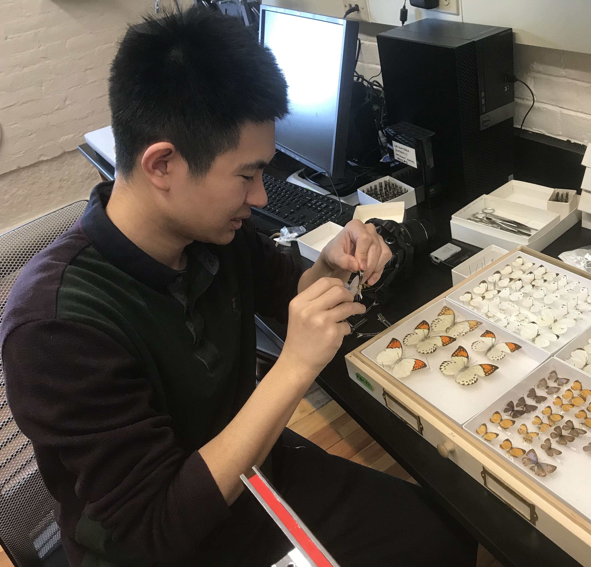

About Me
My name is Song Siliang. I earned my bachelor's degree in biological science from Chu Kochen Honors College of Zhejiang University, China. I am currently working as a Ph.D. student in Jianzhi Zhang's lab at the University of Michigan.
In childhood, I was fascinated by insects. The extraordinary diversity of their morphology and behavior appealed to me, and that curiosity later grew into an interest in the evolutionary forces that shape natural diversity.
I am interested in applying computational methods to evolutionary questions and uncovering evolutionary information embedded in genomic sequences. My research interests include the dynamics of molecular evolution in natural environments and the evolution of sex, including sex determination systems, sex chromosomes, sex ratios, and sexual reproduction.
Apart from evolutionary studies, I am interested in building richer global species databases and exploring digital organisms as systems for studying evolution in computational worlds.